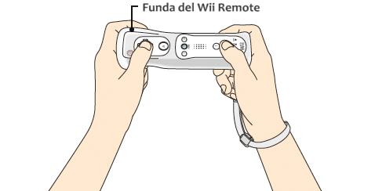

3 |
Preparación del control |
 |
La manera en que se sujeta el control depende del tipo de control. Usa el control como se indica en las siguientes imágenes. Nota: Para obtener más información sobre cómo ajustar la correa o funda del Wii Remote, consulta el manual de operaciones de la consola Wii o el manual de la funda del Wii Remote. 
Uso horizontal del control Wii Remote |
 |
 |
 |